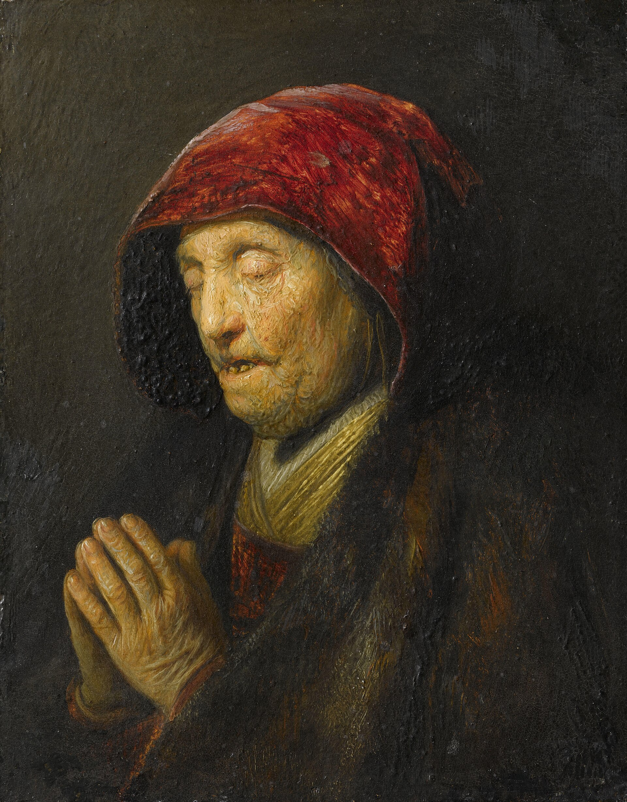
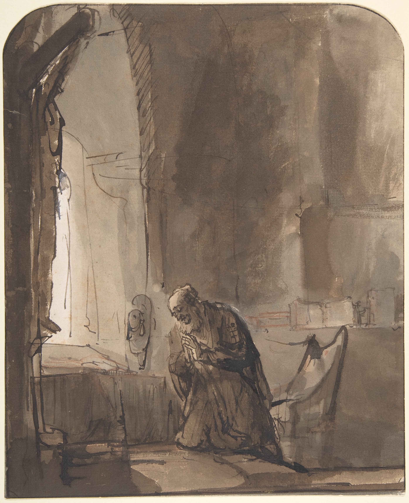
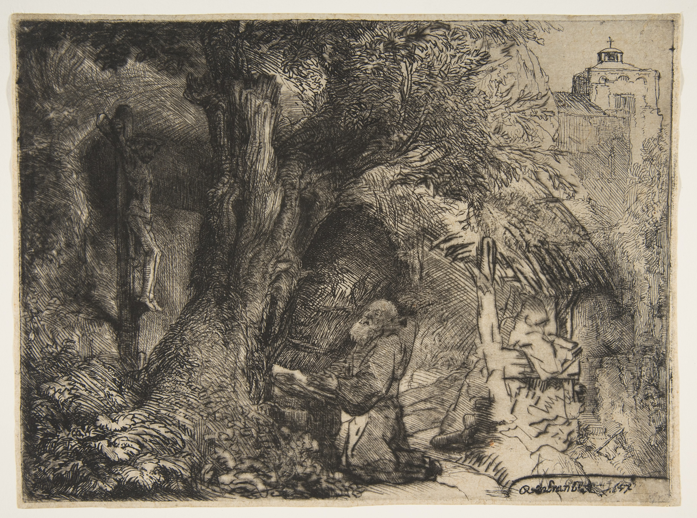

Be constant
in prayer
The importance of prayer · Romans 12:12
Let us pray
Praying felt hard
When I was a baby Christian, praying for someone was hard.

Where was my heart?
As I grew in my faith, I had more things to say, but my heart was not there.
What prayer isn’t
Do not heap up empty phrases as the Gentiles do, for they think they will be heard for their many words.
Matthew 6:7
What prayer isn’t
Do not be like the hypocrites who stand and pray in the synagogues just to be seen.
Matthew 6:5
What prayer is
Prayer is direct and personal communication between us and God.
A relationship expressed in words, sometimes without words, sometimes with tears.

The mercies of God
Paul appeals “therefore,” by the mercies of God.
The road to Romans 12
- Romans 1–3
- Humanity’s sinfulness
- Romans 3–5
- Justification by grace through faith
- Romans 6–8
- Sanctification and life in the Spirit
- Romans 8–11
- God’s sovereignty, Israel, and mercy
- Romans 12–16
- Practical Christian ethics
Rejoice in hope
Let your rejoicing be rooted in hope.
Our hope
The coming of our Lord Jesus Christ and the future redemption of our bodies.

Patient in tribulation
Remain under. Keep steady under pressure. Endure firmly.
Feel the weight
Feel the whole weight of it without abandoning your post.
Constant in prayer
Remain devoted to prayer. Attend constantly to it.
In joy, pray.
In trouble, pray.
Prayer sustains us
Praying constantly sustains rejoicing in hope and being patient in tribulation.
Romans 12:9–21
Let us pray
Personal Walk with God
Pray that every leader and intern will continue to grow in their relationship with God, prioritizing intimacy with Him above all things.
Wisdom and Strength in Leadership
Pray that God will equip every leader and intern and disciple maker to lead with humility, wisdom, compassion towards everyone with a servant heart.
Growth and Discipleship in the Singles Community.
Pray that our community will not simply grow in attendance but, more importantly, in spiritual maturity and discipleship.